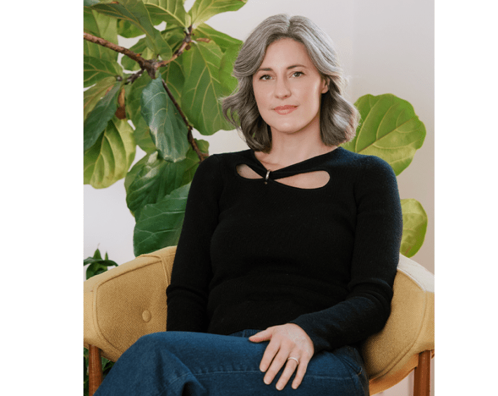

What makes a boy go bad?
An incarcerated man posed this question to behavioral geneticist Kathryn Paige Harden in a letter not long ago. As a teenager, the man had attacked a total stranger in broad daylight. Now many years later, he wanted Harden to help him understand his own horrific act. His question is also at the heart of Harden’s new book Original Sin: On the Genetics of Vice, the Problem of Blame, and the Future of Forgiveness. How much do nature and nurture determine our worst transgressions, how much choice do we have, and how should that shape blame and punishment?
Harden was raised in the Christian church, and, while she no longer attends, she confesses that she never entirely left, either. Her worldview is still colored by an upbringing heavily laden with notions of sin and salvation. This religious scaffolding has led her to the realization that the stories science tells about inheritance map neatly onto the stories Christianity tells about it. One version of that Christian story begins with theologian and philosopher St. Augustine, who developed the doctrine of original sin in the fifth century to try to square suffering with a belief in divine benevolence. Original sin holds that humans are born sinners. St. Augustine’s challengers countered that if it doesn’t involve choice, how can it violate morality? We are caught in a similar bind today: If a child inherits genes that multiply their risk for aggressive behavior, and they’re raised by violent parents, are they less responsible for acts of violence?
In her 2021 book, The Genetic Lottery: Why DNA Matters for Social Equality, Harden argued that ignoring genetic influences on educational and life outcomes perpetuates social inequality rather than protecting against it. (She made a similar argument in the pages of Nautilus magazine.) In her new book, she extends that logic to the biology of vice. But she evades definitive answers to questions about blame. These questions are too ancient and vast for that, she argues. Instead, she traces and retraces the ways biology, philosophy, and theology have shaped our thinking about transgression and punishment across history, and even how they show up in her own personal life.
Harden’s book is personal. She is a sinner in the eyes of the church, and in the eyes of her mother, she tells us, from whom she’s estranged. She opens the book with a mild indiscretion of her own: an LSD trip in the desert. By the end of our conversation, Harden was in tears.

BAD OR BIOLOGY: Author and behavior geneticist Kathryn Paige Harden argues that we can’t leave genetics behind when talking about vice, that there are risks to pretending that biology has nothing to do with bad choices. Photo by Bonnie Burke.
What made you decide to open the book with an LSD trip in the desert?
The simplest answer is that it’s the first thing I wrote. Beginning the book with the first thing that presented itself to my subconscious seemed like the right choice.
But one of the working metaphors I had while writing the book was that I wanted the reader to have the experience of it being like a good psychotherapy session they were listening in on. If you think about the content of an interesting psychotherapy session, there’s the objective authoritarian voice, the interpretive voice. This is where I’m bringing theory, data, and expertise into it. And then there’s a confessional aspect to it: How all of this theory cashes out in someone’s personal life. And then, depending on the type of therapist you go to, there can be a more associative dream element to it. The LSD experience was also so generative for me personally, in terms of thinking through these subjects.
Ultimately, the book is about this tension that we have between the science of human behavior, and then our subjective sense of going through our lives as choosing agents, most of the time. It seemed like a good way to orient the reader very quickly to the fact that the book wasn’t just going to be about that tension, but that that tension was going to try to live on the page, too.
After your return from the desert, you began reading philosophy, theology, and fiction that covered some of the themes of the book. What were some of the ones that spoke to you most?
In the philosophy realm, Thomas Nagel, who comes up a lot and who wrote a whole book, The View from Nowhere, about this tension between the objective and the subjective. Nietzsche’s The Genealogy of Morals, which also has this non-linear structure. It’s very discursive. He’s kind of winding his way around a topic, and obviously he’s writing before there’s any sort of modern science of genetics. But he has this part in there about the problem of man being an animal that keeps its promises. Those two would probably be the most influential.
In theology, David Bentley Hart, a theologian who’s been very critical of the doctrine of Hell and who’s basically argued in favor of universal salvation, which was pretty radical for me. I also went back and read Augustine for the first time since high school. It was interesting to revisit religious writings that I’d read in Bible class in the 11th grade. And there’s a nonfiction writer and poet at Yale in the theology department, Christian Wiman, who wrote a book called Zero to the Bone, which is a lot about how he makes sense of his own religious belief, which is very rich in terms of its literary references. I found that book to be incredibly generative.
Early on in the book, you mention that you’re a recovering Christian, and you say this makes you suspicious of definitive answers to complicated questions about what it means to have a body. What did you mean by that?
So many of the books that I read were very close to this topic: Kevin Mitchell’s Free Agents, or Robert Sapolsky’s Determined. You can add Sam Harris’s Free Will to that list, and Daniel Dennett’s Freedom Evolves. These are books by other academics who are considering this relationship between what we know biologically—whether that be genetics or neuroscience—and our experiences of ourselves as agents having freedom. I would say that one theme of most of that literature is that it’s written from the perspective of, “I have considered this, and now I’m going to make the case for what I think the best answer is.” This isn’t a criticism of that project. My first book is very much like that.
But I just didn’t have that here—that sense of, “Here is this merry-go-round of debate and argument around having a body and freedom and morality and agency and blame, and I’m going to solve it in the space of one book.” I feel like this is such a big topic and one that’s been debated for so long that I’m really suspicious of very definitive answers. I wanted the book to accurately represent the feeling of being a seeker who’s not ever going to arrive at a final destination.
My attitude toward Christianity is probably really similar to that. There was a lot of definitiveness that characterized my youth. There can be a definitiveness in reaction to that, which is like, “Definitely, no, Christianity has no value.” I’m not there either. I still take it really seriously. And I find the condition of being in progress and not forcing myself to say, “I have arrived,” is sort of the condition of being a woman in your 40s in a lot of ways.
Read more: “How to Build a Society for All to Enjoy”
What do you think about arguments from some sociologists and criminologists that the behaviors categorized as sinful or deviant aren’t necessarily natural but rather are culturally determined, social constructs, so they can’t be genetically determined?
I’m a psychologist, so I’m interested in behavior. I’m interested in personality. I’m interested in temperament. And then there are social judgments that we layer on top of that. Some of these behaviors are considered wrong, but not illegal. Some of these are considered illegal, but not wrong. Some of them are considered immoral, but only from certain religious perspectives. Some of them are considered illegal and immoral, sort of regardless of where you are in space and time.
I don’t think that behavior comports to these natural kinds of categories, like criminal behavior or not criminal behavior. And I don’t even really think of myself as studying crime. In the book I talk about how if you’re interested in, say, psychopathy, that’s a set of personality dispositions that are broadly distributed. Many people have psychopathic tendencies and they’re not in jail. They’ve leveraged them very well for success under capitalism. I’m interested in how a person’s interaction with their early environment gives rise to patterns of behavior. And I absolutely agree with sociologists that which of those behaviors we consider beyond the pale and how we punish them is a social judgment. That’s a different layer.
Historically, of course, an emphasis on genetic difference and determinism has often been associated with eugenics. Does the current political environment—where you have violent persecution of immigrants, unapologetic white supremacists in positions of power, and growing use of surveillance technologies—change the calculus at all about the risks of pursuing a science of genetic determinism?
I’m going to split that into two parts. With the surveillance, yes. Americans have historically been rather cavalier about privacy, and that’s included genetic privacy. I have people tell me, “I downloaded my data from 23andMe, then I uploaded it on this website because it was going to give me a new algorithm.” And I’m like, “Don’t do that. Don’t upload your identifiable information.” That’s a rapidly developing area of bioethics in research and otherwise. If I have data on you and your sibling, I could impute what your parents’ genotypes were, and even if they didn’t consent to participate in my research, I can do research on it as if they had. If you’re not in a genetic database, but all your third cousins are, you’re identifiable from it. So the riskiness of genetic information in an era of increasing surveillance is definitely a growing concern.
But the other thing that this current political administration has shown people is that there isn’t a perfectly straightforward lockstep relationship between reactionary or regressive or authoritarian social policies and a belief in the importance of biology. Like what we see with RFK Jr. and MAHA right now is this argument that autism isn’t genetic, but that it’s instead caused by vaccines and food additives and mothers making bad decisions. That’s why they want to change a lot of policies. Many people who would ordinarily think of themselves as critics of genetic research, who instinctively distrust it based on the history of eugenics, aren’t going to look at this and say, “Oh, our leaders are finally pushing back against genetic basis for mental illness. This is such a good thing.”
It’s always been overly simplistic to imagine that if people just gave up thinking about, or talking about, the relationship between genes and behavioral differences, that what many people on the left think of as good social outcomes would just naturally emerge.
Are there historical precedents, where understanding the biology of vice made things better rather than worse in terms of social outcomes?
Biology can be a double-edged sword. If we go back to the autism example, the predominant psychoanalytic theory of autism for a long time was that it was caused by refrigerator mothers, who were cold and rejecting. And one of the things that really began to undermine support for that theory, which was very mother-blaming, were the first genetic studies about autism, showing that it’s highly heritable. Now we’re seeing the backlash to that, the pendulum swing, where people are rejecting the idea that autism is a genetically influenced disorder, even though there’s good evidence that it’s not caused by food additives, vaccines, or environmental sources. That’s one example.
We’re living through something similar with Ozempic and weight and appetite, where people are much less likely on average to have attitudes in which overweight people are seen as morally blameworthy or lacking in willpower. People are less likely to have negative weight stigma about themselves or about other people if they think that weight is biological.
The last example is that there’s research that early twin studies on sexual orientation were particularly influential for people’s attitudes around gay rights in the ’90s. What you see often is that if a behavior is morally stigmatized, then emphasizing the biology can, at some point in the trajectory of social rights, be very good at reducing that moral stigma. And then what you saw in the gay rights community is that there was a reaction to that: “Maybe we don’t need the born-this-way narrative. If it’s not morally blameworthy, why can’t it be a choice?” But that emerged later.
So the genetics-will-necessarily-lead-to-eugenics narrative—I think that’s too simple.
In the book, you write that for certain things like autism, addiction, depression, and obesity, connecting genes to behavior can soften the blame, but that violence and antisocial behavior are different—that we have a desire for vengeance baked into our evolutionary natures when it comes to violence. What do we do with that knowledge?
We often tell ourselves this story that things are either bad or biological. And then when confronted with the evidence that they’re biological, we move them out of the bad category. It’s not bad moms, it’s not bad sex, it’s not bad appetites—it’s a disease. But you can’t really do that with violence. You can’t move it out of the bad category, at least not very easily, because there’s a victim there.
Kurt Gray is a psychologist who’s written about this, about the centrality of perceptions of harm to our sense of what makes something a moral versus an aesthetic concern. When we’re talking about violence, those perceptions of harm are just so front and center. What should we do about that? I wrote the whole book about that. It’s hard for me to come up with a succinct answer.
Early in the book, you write that many supposedly scientific stories turn out to be modern retellings of ancient Christian myths. Can you tell me more about that?
There’s the Augustinian story, which is you can inherit something that makes you behave badly. And that inheritance doesn’t get you off the hook at all. It makes you even more damnable. We end up telling a very similar story about genetics. This person’s bad to the bone. They’re a bad seed, they’re a natural born killer. All of those things are ways of saying in a modern idiom, with reference to genes, they inherited something that made them bad, inherently bad, essentially bad. And that the fact that they didn’t ask for that inheritance doesn’t get them off the hook any at all. It just makes them more punishable.
Then there’s the counter to that, which goes back to Augustine’s primary intellectual rival at the time, Pelagius, who was this British monk, and Julian, a follower of his, who very much objected to this idea of inherited sin. If something’s natural, it can’t be sin, he argued. A sin has to be a matter of free will, and free will can’t be nature. And that also served a theological purpose: What hope do we have for the future if we’re inheriting a bad body? How can we be free? Inheritance was an enemy of personal freedom, of moral freedom, of freedom to change. So the bad or biological binary is an old Christian story.
Genetics is so new. It’s a little baby. We just got the word gene a hundred years ago, and we discovered the structure of DNA 70 years ago. We’re trying to make sense of something that’s absolutely wild. We all have the same four DNA letters. They’re just in different sequences, and we share 80 percent of our DNA with a cow, and there’s this double helix in all of our cells. And for way longer we’ve had stories about inheritance, sin, and blameworthiness and what is their relationship with each other. I don’t think it should be surprising that in the West, we’re drawing on those old scripts when we’re trying to make sense of this new scientific revolution we’re living through.
Read more: “The Original Natural Born Killers”
Do you think it’s a positive development that we now ask science the questions we used to save for a priest or other religious figure?
I don’t know. On the one hand, I feel like scientists are trained in different things. They have different sets of knowledge to pull from. The more diverse voices we have to answer these questions, the better. It’s good if scientists are in that mix, but do not take up the mantle of the new priesthood themselves.
You also write that the stories that we tell ourselves matter. The whole book is grappling with this question, but what is the story we should tell ourselves about how much genes determine behavior?
I think I’m warning against this story, which I would characterize as broadly Augustinian, which characterizes your body as the enemy: “Who will rid me of this troublesome body? All of my sin and all of my foibles are somehow the embodied part of me. And the good part of me that’s gonna overcome that is somehow the not-embodied part of me.” I feel like that story has dangers, because there’s a lot of wisdom in your body and there’s a lot of goodness. You can get yourself in a lot of trouble by ignoring the needs and clamors of your body. So I want to caution against that one.
Even if the determinists and compatibilists, even if the philosophers that say that we have no free will are right, we still have to live today. Right? We still are going to experience ourselves as choosing things. And I do think that we’re storytelling creatures, and a lot of times we feel ourselves to be choosing the next thing, even if it’s an illusion, because the next thing completes the story that we’re telling. A story that positions your body as the enemy and you as a puppet rarely turns out to be a good, productive story.
At the end of the book, you revisit the questions put to you by the man who writes to you from prison: “What makes a child go bad,” and, basically, “How do you interpret the phrase, the apple doesn’t fall far from the tree?” How do you answer him?
My thought about the apple tree expression is how deeply ironic it is. Apples are some of the most genetically diverse organisms. An apple might grow into a tree that produces fruit that’s very different from its parent. They’re not self-fertilizing. That’s why apple farmers don’t grow apples from seed. They graft them. Otherwise, they’d have no crop.
The reason why we have apples with that kind of genetic diversity is that they evolved to be carried very far away from the tree. And genetic diversity is valuable for species if you’re gonna have a really wide-ranging, very unpredictable environment. So in English, we say, “Of course you’re gonna be just like your parents,” when in fact, the science is like, “You might be very different from your parents because you are genetically recombined as a unique creature.” And that genetic diversity is incredibly valuable. That’s how apples have populated the Earth. That’s how humans have populated the Earth.
That’s related to my answer to the second question, which is: What makes a child go bad? I don’t think that any child is bad, or any person is bad. I just don’t think that any human in all of their genetic complexity, their behavioral complexity, and their developmental complexity can ever be flattened to one thing about them, even if that thing is a terrible, terrible thing that they’ve done.
I can answer the question scientifically: Is it likely that what you inherited might have predisposed you to behave badly? But: Did your nature make you a bad person? That’s not a question that I can answer, because I don’t even think there is such a thing. I don’t think there is such a thing as a fundamentally bad person. And again, the collapse of one into the other, does nature or nurture make a child go bad? That comes from those old Augustinian scripts.
It’s ironic that we’re having this conversation right after Easter. The last thing that Jesus did on Earth before he died is he looked to someone who had been convicted of a crime and rather than treat him as if he was reducible to that one act, he said, “Even today you’ll be with me in heaven.”
That’s a fundamentally anti-essentialist … [Choking back tears] Let me cry about that! It’s just the sense that … [Has to pause to collect herself.]
I think that is part of what is so fucked up about our world right now: This sense that people could ever be reduced to being all bad. It’s just a terrible, terrible thing to do. 
Enjoying Nautilus? Subscribe to our free newsletter.
Lead image: tujuh17belas / Adobe Stock
Källförteckning
- Originalartikel: https://nautil.us/the-bad-seed-and-the-problem-of-blame-1279756/